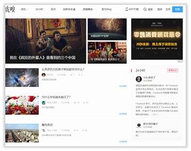
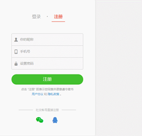
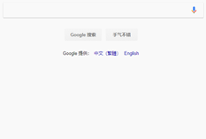
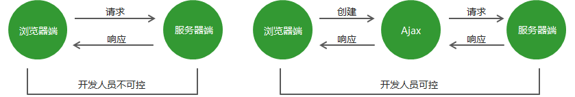
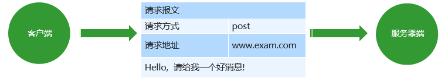

06 jQuery 事件
事件¶
jQuery 事件注册¶
jQuery 为我们提供了方便的事件注册机制，是开发人员抑郁操作优缺点如下：
- 优点: 操作简单，且不用担心事件覆盖等问题。
- 缺点: 普通的事件注册不能做事件委托，且无法实现事件解绑，需要借助其他方法。
语法
element.事件(function() {})
$("div").click(function(){事件处理程序 })
其他事件和原生基本一致
比如 mouseover、mouseout、 blur、 focus、change、 keydown、 keyup、resize、scroll 等
演示代码
<body>
<div></div>
<script>
$(function() {
// 1. 单个事件注册
$("div").click(function() {
$(this).css("background", "purple");
});
$("div").mouseenter(function() {
$(this).css("background", "skyblue");
});
})
</script>
</body>
jQuery 事件处理¶
因为普通注册事件方法的不足，jQuery又开发了多个处理方法，重点讲解如下：
- on(): 用于事件绑定，目前最好用的事件绑定方法
- off(): 事件解绑
- trigger() / triggerHandler(): 事件触发
事件处理 on() 绑定事件¶
因为普通注册事件方法的不足，jQuery又创建了多个新的事件绑定方法bind() / live() / delegate() / on()等，其中最好用的是: on()
语法
- on() 方法优势1:
可以绑定多个事件，多个处理事件处理
$("div").on({
mouseover: function(){},
mouseout: function(){},
click: functioni (){}
});
如果事件处理程序相同
$("div").on("mouseover mouseout", function () {
$(this).toggleClass("current");
});
- on() 方法优势2:
可以事件委派操作。事件委派定义是，把原来加给子元素身上的事件绑定在父元素身上，就是把事件委派给父元素。
$('ul').on("click", "li"， function() {
alert ( 'he1lo world!') ;
});
在此之前有bind(), live(),delegate()等方法来处理事件绑定或者事件委派，最新版本的请用on替代他们。
- on() 方法优势3:
动态创建的元素，click() 没有办法绑定事件。on()可以给动态生成的元素绑定事件
$("div" ).on("click"，"P", function(){
alert("俺可以给动态生成的元素绑定事件")
}):
$("div").append($("<p>我是动态创建的p</p>"));
演示代码
<body>
<div></div>
<ul>
<li>我们都是好孩子</li>
<li>我们都是好孩子</li>
<li>我们都是好孩子</li>
</ul>
<ol></ol>
<script>
$(function() {
// (1) on可以绑定1个或者多个事件处理程序
// $("div").on({
// mouseenter: function() {
// $(this).css("background", "skyblue");
// },
// click: function() {
// $(this).css("background", "purple");
// }
// });
$("div").on("mouseenter mouseleave", function() {
$(this).toggleClass("current");
});
// (2) on可以实现事件委托（委派）
// click 是绑定在ul 身上的，但是 触发的对象是 ul 里面的小li
// $("ul li").click();
$("ul").on("click", "li", function() {
alert(11);
});
// (3) on可以给未来动态创建的元素绑定事件
$("ol").on("click", "li", function() {
alert(11);
})
var li = $("<li>我是后来创建的</li>");
$("ol").append(li);
})
</script>
</body>
案例：发布微博案例¶
- 点击发布按钮， 动态创建一个小li，放入文本框的内容和删除按钮， 并且添加到ul 中。
- 点击的删除按钮，可以删除当前的微博留言。
* {margin: 0;padding: 0}
ul {list-style: none}
.box {width: 600px;margin: 100px auto;border: 1px solid #000;padding: 20px;}
textarea {width: 450px;height: 160px;outline: none;resize: none;}
ul {width: 450px;padding-left: 80px;}
ul li {line-height: 25px;border-bottom: 1px dashed #cccccc;display: none;}
input {float: right;}
ul li a {float: right;}
<body>
<div class="box" id="weibo"><span>微博发布</span>
<textarea name="" class="txt" cols="30" rows="10"></textarea>
<button class="btn">发布</button>
<ul></ul>
</div>
</body>
<script>
$(function () {
// 1.点击发布按钮， 动态创建一个小li，放入文本框的内容和删除按钮， 并且添加到ul 中
$(".btn").on("click", function () {
var li = $("<li></li>");
li.html($(".txt").val() + "<a href='javascript:;'> 删除</a>");
$("ul").prepend(li);
li.slideDown();
$(".txt").val("");
});
// 2.点击的删除按钮，可以删除当前的微博留言li
// $("ul a").click(function() {
// 此时的click不能给动态创建的a添加事件
// alert(11);
// })
// on可以给动态创建的元素绑定事件
$("ul").on("click", "a", function () {
$(this).parent().slideUp(function () {
$(this).remove();
});
});
})
</script>
事件处理 off() 解绑事件¶
当某个事件上面的逻辑，在特定需求下不需要的时候，可以把该事件上的逻辑移除，这个过程我们称为事件解绑。jQuery 为我们提供 了多种事件解绑方法：die() / undelegate() / off() 等，甚至还有只触发一次的事件绑定方法 one()，在这里我们重点讲解一下 off() ;
语法
off(方法可以移除通过on0方法添加的事件处理程序。
$("p").off() // 解绑p元素所有事件处理程序
$("p").off("click") // 解绑p元素上面的点击事件后面的foo是监听函数名
$("ul").off("click", "li"); // 解绑事件委托
如果有的事件只想触发一次，可以使用one()来绑定事件。
演示代码
<body>
<div></div>
<ul>
<li>我们都是好孩子</li>
<li>我们都是好孩子</li>
<li>我们都是好孩子</li>
</ul>
<p>我是一个P标签</p>
<script>
$(function() {
// 事件绑定
$("div").on({
click: function() {
console.log("我点击了");
},
mouseover: function() {
console.log('我鼠标经过了');
}
});
$("ul").on("click", "li", function() {
alert(11);
});
// 1. 事件解绑 off
// $("div").off(); // 这个是解除了div身上的所有事件
$("div").off("click"); // 这个是解除了div身上的点击事件
$("ul").off("click", "li");
// 2. one() 但是它只能触发事件一次
$("p").one("click", function() {
alert(11);
})
})
</script>
</body>
事件处理 trigger() 自动触发事件¶
有些时候，在某些特定的条件下，我们希望某些事件能够自动触发, 比如轮播图自动播放功能跟点击右侧按钮一致。可以利用定时器自动触发右侧按钮点击事件，不必鼠标点击触发。由此 jQuery 为我们提供了两个自动触发事件 trigger() 和 triggerHandler() ;
语法
- 第一种: trigger()
element.click() // 第一种简写形式
element.trigger("type") //第二种自动触发模式
- 第二种: triggerHandler()
element.triggerHandler(type) // 第三种自动触发模式
triggerHandler模式不会触发元素的默认行为，这是和前面两种的区别。
演示代码
<body>
<div></div>
<input type="text">
<script>
$(function() {
// 绑定事件
$("div").on("click", function() {
alert(11);
});
// 自动触发事件
// 1. 元素.事件()
// $("div").click();会触发元素的默认行为
// 2. 元素.trigger("事件")
// $("div").trigger("click");会触发元素的默认行为
$("input").trigger("focus");
// 3. 元素.triggerHandler("事件") 就是不会触发元素的默认行为
$("input").on("focus", function() {
$(this).val("你好吗");
});
// 一个会获取焦点，一个不会
$("div").triggerHandler("click");
// $("input").triggerHandler("focus");
});
</script>
</body>
jQuery 事件对象¶
jQuery 对DOM中的事件对象 event 进行了封装，兼容性更好，获取更方便，使用变化不大。事件被触发，就会有事件对象的产生。
语法
element.on(events, [selector], function(event) {})
阻止默认行为: event.preventDefault() 或者return false
阻止冒泡: event.stopPropagation()
演示代码
<body>
<div></div>
<script>
$(function() {
$(document).on("click", function() {
console.log("点击了document");
})
$("div").on("click", function(event) {
// console.log(event);
console.log("点击了div");
event.stopPropagation();
})
})
</script>
</body>
注意：jQuery中的 event 对象使用，可以借鉴 API 和 DOM 中的 event 。
jQuery 拷贝对象¶
jQuery中分别为我们提供了两套快速获取和设置元素尺寸和位置的API，方便易用，内容如下。
语法
$.extend([deep]，target, object1， [objectN] )
- deep:如果设为true为深拷贝，默认为false 浅拷贝
- target:要拷贝的目标对象
- object1:待拷贝到第一个对象的对象。
- objectN:待拷贝到第N个对象的对象。
- 浅拷贝目标对象引用的被拷贝的对象地址，修改目标对象会影响被拷贝对象。
- 深拷贝，前面加true，完全克隆， 修改目标对象不会影响被拷贝对象。
演示代码
<script>
$(function() {
// 1.合并数据
var targetObj = {};
var obj = {
id: 1,
name: "andy"
};
// $.extend(target, obj);
$.extend(targetObj, obj);
console.log(targetObj);
// 2. 会覆盖 targetObj 里面原来的数据
var targetObj = {
id: 0
};
var obj = {
id: 1,
name: "andy"
};
// $.extend(target, obj);
$.extend(targetObj, obj);
console.log(targetObj);
})
</script>
Ajax¶
Ajax基础¶
传统网站中存在的问题¶
- 网速慢的情况下，页面加载时间长，用户只能等待
- 表单提交后，如果一项内容不合格，需要重新填写所有表单内容
- 页面跳转，重新加载页面，造成资源浪费，增加用户等待时间
Ajax 概述¶
Ajax：标准读音 [ˈeɪˌdʒæks] ，中文音译：阿贾克斯
它是浏览器提供的一套方法，可以实现页面无刷新更新数据，提高用户浏览网站应用的体验。

Ajax 的应用场景¶
- 页面上拉加载更多数据
- 列表数据无刷新分页
- 表单项离开焦点数据验证
- 搜索框提示文字下拉列表


Ajax的运行环境¶
Ajax 技术 需要运行在网站环境中才能生效 ，当前课程会使用 Flask 创建的服务器作为网站服务器。
Ajax 运行原理¶
Ajax 相当于浏览器发送请求与接收响应的代理人，以实现在不影响用户浏览页面的情况下，局部更新页面数据，从而提高用户体验。

Ajax 的实现步骤¶
- 创建 Ajax 对象
var xhr = new XMLHttpRequest();
- 告诉 Ajax 请求地址以及请求方式
xhr.open('get', 'http://www.example.com');
- 发送请求
xhr.send();
- 获取服务器端给与客户端的响应数据
xhr.onload = function () {
console.log(xhr.responseText);
}
服务器端响应的数据格式¶
在真实的项目中，服务器端 大多数情况下会以 JSON 对象作为响应数据的格式 。当客户 端拿到响应数据时，要将 JSON 数据和 HTML 字符串进行拼接，然后将拼接的结果展示在页面中。
在 http 请求与响应的过程中，无论是请求参数还是响应内容，如果是对象类型，最终都会被转换为对象字符串进行传输。
JSON.parse() // 将 json 字符串转换为json对象
请求参数传递¶
传统网站表单提交
<form method="get" action="http://www.example.com">
<input type="text" name="username"/>
<input type="password" name="password">
</form>
<!– http://www.example.com?username=zhangsan&password=123456 -->
- GET 请求方式
xhr.open('get', 'http://www.example.com?name=zhangsan&age=20');
- POST 请求方式
xhr.setRequestHeader('Content-Type', 'application/x-www-form-urlencoded') xhr.send('name=zhangsan&age=20');
请求报文¶
在 HTTP 请求和响应的过程中传递的数据块就叫报文，包括要传送的数据和一些附加信息，这些数据和信息要遵守规定好的格式。

请求参数的格式¶
- application/x-www-form-urlencoded
name=zhangsan&age=20&sex=男
- application/json
{name: 'zhangsan', age: '20', sex: '男'}
在请求头中指定 Content-Type 属性的值是 application/json，告诉服务器端当前请求参数的格式是 json。
JSON.stringify() // 将json对象转换为json字符串
注意：get 请求是不能提交 json 对象数据格式的，传统网站的表单提交也是不支持 json 对象数据格式的。
获取服务器端的响应¶
Ajax 状态码¶
在创建ajax对象，配置ajax对象，发送请求，以及接收完服务器端响应数据，这个过程中的每一个步骤都会对应一个数值，这个数值就是ajax状态码。
0：请求未初始化(还没有调用open()) 1：请求已经建立，但是还没有发送(还没有调用send()) 2：请求已经发送 3：请求正在处理中，通常响应中已经有部分数据可以用了 4：响应已经完成，可以获取并使用服务器的响应了
xhr.readyState // 获取Ajax状态码
Ajax 错误处理¶
- 网络畅通，服务器端能接收到请求，服务器端返回的结果不是预期结果。 可以判断服务器端返回的状态码，分别进行处理。xhr.status 获取http状态码
- 网络畅通，服务器端没有接收到请求，返回404状态码。 检查请求地址是否错误。
- 网络畅通，服务器端能接收到请求，服务器端返回500状态码。 服务器端错误，找后端程序员进行沟通。
- 网络中断，请求无法发送到服务器端。 会触发xhr对象下面的onerror事件，在onerror事件处理函数中对错误进行处理。
$.ajax()¶
$.ajax() 方法概述¶
作用：发送Ajax请求。
$.ajax({
type: 'get',
url: 'http://www.example.com',
data: { name: 'zhangsan', age: '20' },
contentType: 'application/x-www-form-urlencoded',
beforeSend: function () {
return false
},
success: function (response) {},
error: function (xhr) {}
});
{
data: 'name=zhangsan&age=20'
}
{
contentType: 'application/json'
}
JSON.stringify({name: 'zhangsan', age: '20'})
serialize方法¶
<form id="form">
<input type="text" name="username">
<input type="password" name="password">
<input type="submit" value="提交">
</form>
<script type="text/javascript">
// 将表单内容拼接成字符串类型的参数
var params = $('#form').serialize()
console.log(params)
</script>
$.get()、$.post() 方法¶
作用：.get方法用于发送get请求，.post方法用于发送post请求。
$.get('http://www.example.com', {name: 'zhangsan', age: 30}, function (response) {})
$.post('http://www.example.com', {name: 'lisi', age: 22}, function (response) {})
案例：省市区联动¶
<link rel="stylesheet" href="bootstrap.min.css">
<style type="text/css">
.container {
padding-top: 150px;
}
</style>
<div class="container">
<div class="form-inline">
<div class="form-group">
<select class="form-control" id="province"></select>
</div>
<div class="form-group">
<select class="form-control" id="city">
<option>请选择城市</option>
</select>
</div>
<div class="form-group">
<select class="form-control" id="area">
<option>请选择县城</option>
</select>
</div>
</div>
</div>
<script src="ajax.js"></script>
<script>
// 获取省市区下拉框元素
var province = document.getElementById('province');
var city = document.getElementById('city');
var area = document.getElementById('area');
// 获取省份信息
ajax({
type: 'get',
url: 'http://localhost:5000/province',
success: function (data) {
// 将服务器端返回的数据和html进行拼接
// {#var html = template('provinceTpl', {province: data});#}
html = "<option>请选择省份</option>"
data.forEach(function (item) {
html += "<option value=" + item.id + ">" + item.name + "</option>"
})
// 将拼接好的html字符串显示在页面中
province.innerHTML = html;
}
});
// 为省份的下拉框添加值改变事件
province.onchange = function () {
// 获取省份id
var pid = this.value;
// 清空县城下拉框中的数据
var html = "<option>请选择县城</option>";
area.innerHTML = html;
// 根据省份id获取城市信息
ajax({
type: 'get',
url: 'http://127.0.0.1:5000/cities',
data: {
id: pid
},
success: function (data) {
var html = "<option>请选择县城</option>"
data.forEach(function (item) {
html += '<option value="'+item.id+'">'+item.name+'</option>'
})
city.innerHTML = html;
}
})
};
// 当用户选择城市的时候
city.onchange = function () {
// 获取城市id
var cid = this.value;
// 根据城市id获取县城信息
ajax({
type: 'get',
url: 'http://localhost:5000/areas',
data: {
id: cid
},
success: function (data) {
var html = '<option>请选择县城</option>';
data.forEach(function (item) {
html += '<option value="'+item.id+'">'+item.name+'</option>'
})
area.innerHTML = html;
}
})
}
</script>
附录¶
restful 风格指南：http://www.ruanyifeng.com/blog/2014/05/restful_api.html